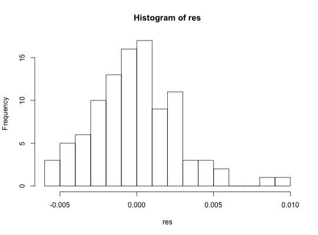

Calculate random samples of the index of association for genlight objects.
Genlight objects can contain millions of loci. Since it does not make much sense to calculate the index of association over that many loci, this function will randomly sample sites to calculate the index of association.
samp.ia(x, n.snp = 100L, reps = 100L, threads = 1L, quiet = FALSE)
Arguments
| x | a |
|---|---|
| n.snp | the number of snps to be used to calculate standardized index of association. |
| reps | the number of times to perform the calculation. |
| threads | The maximum number of parallel threads to be used within this function. A value of 0 (default) will attempt to use as many threads as there are available cores/CPUs. In most cases this is ideal. A value of 1 will force the function to run serially, which may increase stability on some systems. Other values may be specified, but should be used with caution. |
| quiet | if |
Value
Index of association representing the samples in this genlight object.
Details
The index of association is a summary of linkage disequilibrium
among many loci. More information on the index of association can be found
associated with the funciton ia. A value near or at zero
indicator of linkage equilibrium, whereas values significantly greater than
zero indicate linkage disequilibrium. However, if the observed variance in
distance among individuals is less than the expected, mildly negative
values may be observed (as the range of this index is negative one to one).
This function will call the function bitwise.ia for
reps times to calculate the index of association over n.snp
loci. The standardized index of association ('rbarD') will be calculated
reps times. These esitmates of linkage disequilibrium from random
genomic fractions can then be summarized (e.g., using a histogram) as an
estimate of genome-wide linkage disequilibrium.
This function currently only works for objects of class genlight or snpclone that are of a single ploidy level and that ploidy is either haploid or diploid.
Note
this will calculate the standardized index of association from Agapow
2001. See ia for details.
See also
genlight,
snpclone,
win.ia,
ia,
bitwise.dist
bitwise.ia
Examples
# with structured snps assuming 1e4 positions set.seed(999) x <- glSim(n.ind = 10, n.snp.nonstruc = 5e2, n.snp.struc = 5e2, ploidy = 2, parallel = FALSE) position(x) <- sort(sample(1e4, 1e3)) res <- samp.ia(x)#> | | | 0% | |= | 1% | |= | 2% | |== | 3% | |=== | 4% | |==== | 5% | |==== | 6% | |===== | 7% | |====== | 8% | |====== | 9% | |======= | 10% | |======== | 11% | |======== | 12% | |========= | 13% | |========== | 14% | |========== | 15% | |=========== | 16% | |============ | 17% | |============= | 18% | |============= | 19% | |============== | 20% | |=============== | 21% | |=============== | 22% | |================ | 23% | |================= | 24% | |================== | 25% | |================== | 26% | |=================== | 27% | |==================== | 28% | |==================== | 29% | |===================== | 30% | |====================== | 31% | |====================== | 32% | |======================= | 33% | |======================== | 34% | |======================== | 35% | |========================= | 36% | |========================== | 37% | |=========================== | 38% | |=========================== | 39% | |============================ | 40% | |============================= | 41% | |============================= | 42% | |============================== | 43% | |=============================== | 44% | |================================ | 45% | |================================ | 46% | |================================= | 47% | |================================== | 48% | |================================== | 49% | |=================================== | 50% | |==================================== | 51% | |==================================== | 52% | |===================================== | 53% | |====================================== | 54% | |====================================== | 55% | |======================================= | 56% | |======================================== | 57% | |========================================= | 58% | |========================================= | 59% | |========================================== | 60% | |=========================================== | 61% | |=========================================== | 62% | |============================================ | 63% | |============================================= | 64% | |============================================== | 65% | |============================================== | 66% | |=============================================== | 67% | |================================================ | 68% | |================================================ | 69% | |================================================= | 70% | |================================================== | 71% | |================================================== | 72% | |=================================================== | 73% | |==================================================== | 74% | |==================================================== | 75% | |===================================================== | 76% | |====================================================== | 77% | |======================================================= | 78% | |======================================================= | 79% | |======================================================== | 80% | |========================================================= | 81% | |========================================================= | 82% | |========================================================== | 83% | |=========================================================== | 84% | |============================================================ | 85% | |============================================================ | 86% | |============================================================= | 87% | |============================================================== | 88% | |============================================================== | 89% | |=============================================================== | 90% | |================================================================ | 91% | |================================================================ | 92% | |================================================================= | 93% | |================================================================== | 94% | |================================================================== | 95% | |=================================================================== | 96% | |==================================================================== | 97% | |===================================================================== | 98% | |===================================================================== | 99% | |======================================================================| 100%hist(res, breaks = "fd")# with unstructured snps assuming 1e4 positions set.seed(999) x <- glSim(n.ind = 10, n.snp.nonstruc = 1e3, ploidy = 2) position(x) <- sort(sample(1e4, 1e3)) res <- samp.ia(x)#> | | | 0% | |= | 1% | |= | 2% | |== | 3% | |=== | 4% | |==== | 5% | |==== | 6% | |===== | 7% | |====== | 8% | |====== | 9% | |======= | 10% | |======== | 11% | |======== | 12% | |========= | 13% | |========== | 14% | |========== | 15% | |=========== | 16% | |============ | 17% | |============= | 18% | |============= | 19% | |============== | 20% | |=============== | 21% | |=============== | 22% | |================ | 23% | |================= | 24% | |================== | 25% | |================== | 26% | |=================== | 27% | |==================== | 28% | |==================== | 29% | |===================== | 30% | |====================== | 31% | |====================== | 32% | |======================= | 33% | |======================== | 34% | |======================== | 35% | |========================= | 36% | |========================== | 37% | |=========================== | 38% | |=========================== | 39% | |============================ | 40% | |============================= | 41% | |============================= | 42% | |============================== | 43% | |=============================== | 44% | |================================ | 45% | |================================ | 46% | |================================= | 47% | |================================== | 48% | |================================== | 49% | |=================================== | 50% | |==================================== | 51% | |==================================== | 52% | |===================================== | 53% | |====================================== | 54% | |====================================== | 55% | |======================================= | 56% | |======================================== | 57% | |========================================= | 58% | |========================================= | 59% | |========================================== | 60% | |=========================================== | 61% | |=========================================== | 62% | |============================================ | 63% | |============================================= | 64% | |============================================== | 65% | |============================================== | 66% | |=============================================== | 67% | |================================================ | 68% | |================================================ | 69% | |================================================= | 70% | |================================================== | 71% | |================================================== | 72% | |=================================================== | 73% | |==================================================== | 74% | |==================================================== | 75% | |===================================================== | 76% | |====================================================== | 77% | |======================================================= | 78% | |======================================================= | 79% | |======================================================== | 80% | |========================================================= | 81% | |========================================================= | 82% | |========================================================== | 83% | |=========================================================== | 84% | |============================================================ | 85% | |============================================================ | 86% | |============================================================= | 87% | |============================================================== | 88% | |============================================================== | 89% | |=============================================================== | 90% | |================================================================ | 91% | |================================================================ | 92% | |================================================================= | 93% | |================================================================== | 94% | |================================================================== | 95% | |=================================================================== | 96% | |==================================================================== | 97% | |===================================================================== | 98% | |===================================================================== | 99% | |======================================================================| 100%hist(res, breaks = "fd")